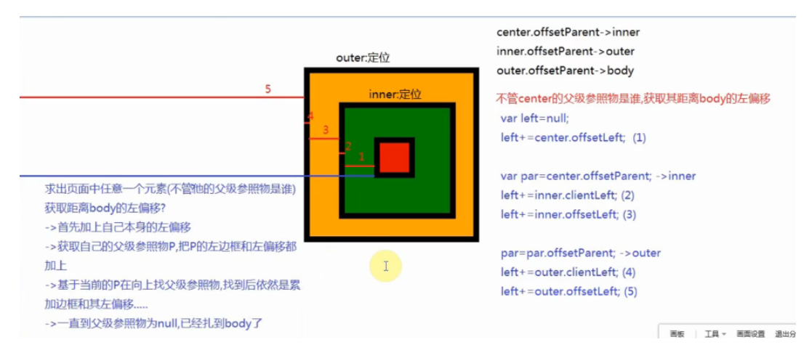

| 属性 | 值 |
|---|---|
| client | top/left/width/height |
| offset | top/left/width/height/parent |
| scroll | top/left/width/height |

<div id="outer">
<div id="inner">
<div id="center"></div>
</div>
</div>clientTop/Left/Width/Height
获取当前页面一屏幕(可视区域)的宽度和高度
document.documentElement.clientWidth || document.body.clientWidth
document.documentElement.clientHeight || document.body.clientHeight2.clientTop & clientLeft：获取(上/左)边框的宽度
3.offsetWidth & offsetHeight：在client的基础上加上border（和内容是否溢出也没有关系）
4.offsetTop / offsetLeft：获取当前盒子距离其父级参照物的偏移量(上偏移/左偏移) 当前盒子的外边框开始~父级参照物的内边框
center.offsetParent //=>BODY
inner.offsetParent //=>BODY
outer.offsetParent //=>BODY获取当前页面的真实宽高（包含溢出的部分）
document.documentElement.scrollWidth || document.body.scrollWidth
document.documentElement.scrollHeight || document.body.scrollHeight7.scrollTop / scrollLeft：滚动条卷去的宽度或者高度
最小卷去值：0
最大卷去值：真实页面的高度 - 一屏幕的高度 document.documentElement.scrollHeight-document.documentElement.clientHeight
在JS盒子模型13个属性中，只有scrollTop/scrollLeft是“可读写”属性，其余都是“只读”属性
操作浏览器的盒子模型属性，我们一般都要写两套，用来兼容各种模式下的浏览器
[获取元素具体的某个样式值]
1.[元素].style.xxx 操作获取
只能获取所有写在元素行内上的样式(不写在行内上,不管你写没写都获取不到,真实项目中我们很少会把样式写在行内上),outer.style.width =>'' (width是写在样式表中的)
2.获取当前元素所有经过浏览器计算的样式
经过计算的样式：只要当前元素可以在页面中呈现（或者浏览器渲染它了），那么它的样式都是被计算过的
不管当前样式写在哪,不管你是否写了(浏览器会给元素设置一些默认样式)
标准浏览器(IE9+)
window.getComputedStyle([元素],[伪类,一般都写null]) 获取到当前元素所有被浏览器计算过的样式(对象)
IE6~8
[元素].currentStyle 获取经过计算的样式